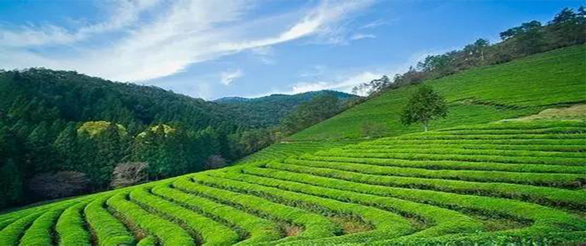
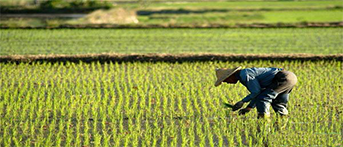
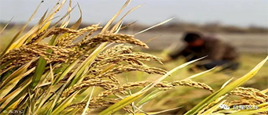
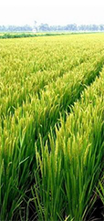
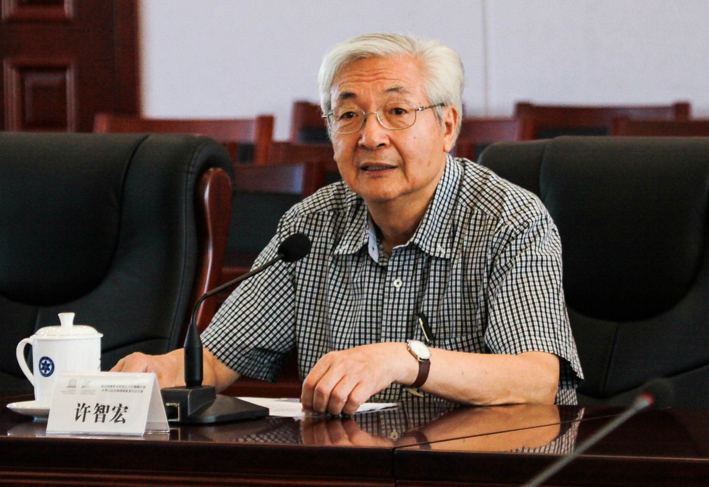

Agricultural headlines
Transforming Agricultural Areas into High-end Projects and Promoting Soft Power by "Golden Business Card"
From the Outer Suburbs of the Capital, Agricultural Areas to the Reform of Beijing
The frontier of development and coordinated development between Beijing, Tianjin and Hebei, now
Daxing District takes relieving, renovating and promoting promotion as its grasp, on the one hand
Making Great Efforts to Introduce High-end Industry Projects and Build North China
Beijing's new economic development plateau 【MORE】
Han Changfu Meets Serbian Minister of Agriculture, Forestry and Water Resources Nadimovic
Han Changfu spoke highly of the achievements of agricultural cooperation and development between the two countries.
The close contacts between the two sides in the field of agriculture in recent years were briefly reviewed.
The situation. Han Changfu said that China and Seychelles complement each other in agriculture
Strong sex【MORE】
New Agricultural Policy

Urban and rural medical
Urban and rural medical
insurance integration

Prevention and Control
Prevention and Control
of Soil Pollution
Prevention and Control of Soil Pollution
In recent years, aiming at the environmental and land pollution problems, the state has taken a series of measures, especially in the field of ecological environmental protection.
Planting subsidy
Planting subsidy
In 2019, document No. 1 of the Central Committee made it clear that grain production should be stabilized. We will not relax our efforts to improve grain production, promote the implementation of land-based and technology-based grain storage, and ensure that the sown area of grain is stable at 1.65 billion mu.With regard to subsidies for grain crops, document No. 1 of the Central Committee in 2019 proposed that we should improve the minimum purchase price policy for rice and wheat and the subsidy policy for corn and soybean producers in accordance with the orientation of better playing the role of market mechanism.

Agricultural machinery subsidies
Agricultural machinery subsidies
With the development of society, the improvement of science and technology and the level of agricultural machinery, the state has made corresponding adjustments to the purchase tax of agricultural machinery and the abandonment of agricultural machinery.
Agricultural Interview
-
HAN CHANGBIN
The Future of Agriculture
- Adhere to the Priority of Agricultural and Rural Development
Adhere to Priority Development of Agriculture and Rural Areas
and Vigorously Implement the Strategy of Vitalizing Rural Areas-
Adhere to the Priority of Agricultural and Rural Development
embodies the distinct goal orientation and problem orientation.
-
Accurately grasp the connotation requirement of adhering to the priority development of agriculture and countryside
Strengthening the Party's centralized and unified leadership over the work of "agriculture, countryside and farmers", giving priority to the allocation of cadres
-
XU ZHIHONG
The Only Way for Science and Technology of Agriculture in China
- Genetically modified technology is not terrible
Challenges and Scientific and Technological Responses to Agricultural Development in China
-
Demand is rising rapidly
Chinese people's demand for animal crops such as fish and eggs has risen rapidly, while other foods have increased accordingly. China has once again transformed from an agricultural exporter to an agricultural importer.
-
Challenges
Increasingly prominent environmental problems < br > the trend of the loss of rural superior labor force in Urbanization
-
The Nineteenth Congress Press Center
Holding Collective Interview on "Agricultural Science and Technology Innovation"
- Modernization of Agricultural Rural Areas
The Information Center of the Nineteenth National Congress of the Communist Party of China held a collective interview on the theme "Innovation of Agricultural Science and Technology"
-
Progress of Agricultural Science and Technology
China's Agricultural Science and Technology has made considerable progress
-
Insert Technology Wings into Agriculture
We should further strengthen
in basic and original innovation and strengthen R&D in technology.
-
CHEN YANG
Adhering to Ideals and Beliefs, Practicing True Work
- Strengthening the Renovation of Rural Human Settlement Environment
Teach the Party Course of "Never Forget the First Heart, Keep the Mission in mind" for the Special Class of Rural Revitalization
-
Firm faith and belief
Consciously Achieve "Two Maintenance"
-
Adhere to the People's Position
Keep in mind the sense of purpose
-
Adhere to the Mission
Take responsibility for starting an undertaking